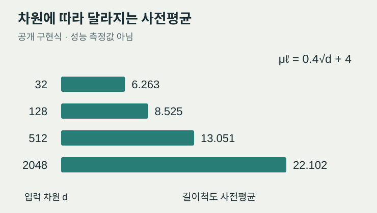
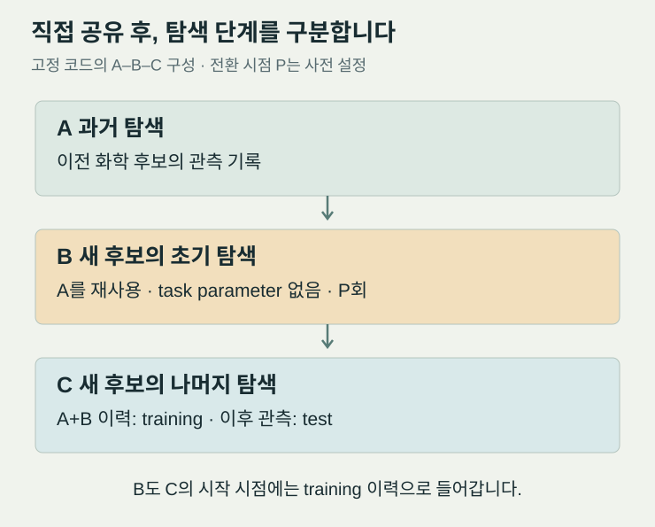

새로운 반응 조건을 찾을 때마다 실험을 처음부터 반복할 필요가 있을까요. 이전 리간드나 기질에서 얻은 수율 기록이 있다면, 새 화학종을 탐색할 때도 그 경험을 활용하고 싶어집니다. 그러나 구조가 비슷한 분자가 같은 반응성을 보장하지는 않습니다. 과거에 잘 작동하던 조건이 새 후보에서는 실패한다면, 축적한 데이터가 다음 실험의 선택을 오히려 방해할 수도 있습니다.
Guanming Chen, Priyanka Parihar, Maximilian Fleck, Thijs Stuyver의 Robust Transfer Learning for Bayesian Optimization of Chemical Reactions는 이 문제를 다룹니다. 연구진은 분자 표현을 해석하는 확률 모델과 과거 데이터의 전이 방식을 함께 살피고, 탐색 초반에는 정보를 적극적으로 공유하다가 이후에는 탐색 단계의 차이를 모델에 반영하는 방법을 제안했습니다. Stuyver가 공유한 Digital Discovery 게재 소식을 계기로, 이 접근이 어떻게 작동하며 재료 탐색에 어떤 판단 기준을 제공하는지 검토합니다. [1][2]
한 번의 예측보다 다음 실험의 선택이 중요한 이유
베이지안 최적화(Bayesian optimization, BO)는 이미 측정한 결과로 목적함수를 추정하고, 다음에 측정할 조건을 고르는 순차적 실험 설계 방법입니다. 화학 반응에서는 리간드, 용매, 염기, 온도와 농도가 입력 x가 되고, 수율 같은 측정값이 출력 y가 됩니다. 모든 조합을 평가하기 어려울 때, 제한된 실험 예산으로 높은 수율을 일찍 찾는 것이 목표입니다.
그 내부의 가우시안 과정(Gaussian process, GP)은 함수에 대한 확률 모델입니다. 관측값을 조건으로 삼아 아직 측정하지 않은 후보의 예측 평균과 불확실성을 계산합니다. 다음 실험을 고르는 획득함수는 유망해 보이는 조건과 더 알아볼 필요가 있는 조건을 함께 고려합니다. 따라서 평균 예측 오차만 낮다고 실험 선택까지 좋아지는 것은 아닙니다. 후보 사이의 상관관계와 불확실성도 적절해야 합니다.
공개 구현은 GP 대리모델과 Matérn 커널을 사용하고, 획득함수로 qLogEI를 지정합니다. 이는 기대 개선량(expected improvement, EI)을 안정적으로 계산하기 위한 로그 기반 구현입니다. 여기서 전이학습은 이전 최적화에서 얻은 관측을 새 탐색에 재사용하는 방법을 뜻합니다. 사전학습된 분자 표현을 이용하는 일과, 이전 반응의 수율 기록을 재사용하는 일은 별개로 구분해야 합니다. [3][6]
좋은 분자 표현도 거리 척도가 어긋나면 작동하지 않습니다
분자를 모델에 넣으려면 수치로 표현해야 합니다. 원핫 인코딩(one-hot encoding)은 각 범주를 구분하지만 화학적 닮음을 직접 담지 않습니다. 반면 사전학습된 그래프 신경망이나 Transformer의 내부 벡터를 쓰는 잠재공간 분자 표현(hidden-space featurization, HSF)은 분자 사이의 관계를 전달할 수 있습니다. 그만큼 입력 차원이 커질 수 있으며, 모델이 그 공간의 거리를 어떻게 해석하는지가 중요해집니다.
GP의 길이척도(length scale)는 입력이 얼마나 달라져도 두 관측을 서로 관련된 것으로 볼지 조절합니다. 길이척도가 너무 짧으면 대부분의 후보가 서로 무관하게 취급됩니다. 이때 몇 개의 실험 결과가 다른 후보의 예측을 바꾸는 힘은 약해집니다. 하이퍼프라이어(hyperprior)는 이러한 커널 매개변수에 두는 사전분포입니다. 관측이 적은 초기 탐색에서는 이 설정의 영향이 클 수 있습니다.
차원의 효과는 간단한 계산으로 이해할 수 있습니다. 각 좌표를 독립적인 0~1 균등변수로 놓는 설명용 가정에서, 두 점 사이 거리 제곱의 평균은 다음과 같습니다.
d는 입력 특징의 개수입니다. 이 가정에서는 전형적인 거리의 크기가 √d에 비례해 증가합니다. 실제 분자 벡터에는 상관관계와 비등방성이 있어 이 식을 그대로 적용할 수 없지만, 같은 길이척도를 모든 표현에 고정하면 문제가 생길 수 있는 이유를 보여줍니다. 차원에 맞춘 설정은 그 출발점을 보정하며, 학습된 표현의 화학적 유효성을 자동으로 보증하지는 않습니다.
Chen, Fleck, Stuyver의 선행 연구는 길이척도와 차원의 불일치가 주변우도(marginal likelihood)를 평탄하게 만들고 대리모델 학습과 획득함수 최적화를 약화시킬 수 있다고 보고했습니다. 논문은 2026년 5월 15일 Journal of Chemical Theory and Computation에 온라인 게재됐습니다. 출판사 초록은 √d에 따라 변하는 하이퍼프라이어가 여러 반응 벤치마크에서 잠재공간 표현의 이점을 회복·확대했다고 설명합니다. 이 주장을 모든 고차원 문제에서의 우월성으로 일반화할 수는 없습니다. [4][5]

adaptive_emilien 구현식으로 계산한 길이척도 사전평균입니다. 차원은 설명을 위해 고른 값이며 실제 데이터셋의 특징 차원이나 성능 결과를 뜻하지 않습니다. 출처: 공개 코드; 도표는 리뷰에서 재구성했습니다.검토한 코드에서 CHEN 하이퍼프라이어의 길이척도 평균은 μℓ = 0.4√d + 4로 설정됩니다. 길이척도에는 shape–rate 표기의 Gamma(2μℓ, 2)를, 출력 스케일에는 Gamma(μℓ, 1)를 사용합니다. 두 사전분포 모두 이 구현에서 차원에 따라 바뀝니다. 따라서 성능 차이를 길이척도 하나의 효과로만 분해했다고 해석해서는 안 됩니다. 계수 0.4와 4는 해당 구현의 경험적 설정이며, 재료 데이터의 단위·정규화·특징 처리까지 무시하고 복사할 보편 상수가 아닙니다. [3]
이전 반응과 새 반응을 얼마나 같은 문제로 볼 것인가
새 연구의 공개 초록은 이전 최적화와 다른 기질·리간드·촉매 등을 허용하는 화학 탐색 공간의 확장을 다룹니다. 저자들은 기존 벤치마크에서 과거 관측을 직접 재사용하는 방법이 효과적이었다고 보고하는 동시에, 의도적으로 구성한 어려운 전이 상황에서는 잘못된 과거 정보가 최적화를 저해할 수 있다고 설명합니다. 이것이 음의 전이(negative transfer)입니다. 새 후보에서의 반응성 순서가 바뀌거나 과거의 고수율 조건이 더는 유효하지 않을 때, 공유한 데이터가 획득함수를 부적절한 영역으로 이끌 수 있습니다. [2]
| 비교 방법 | 과거 관측을 사용하는 방식 | 판단할 부분 |
|---|---|---|
| 전이 없음 | 새 탐색의 관측으로 시작 | 과거 데이터 없이 얻는 기준 성능과 초기 실험 비용 |
| 직접 전이 | 과거·신규 관측을 단계 구분 없이 함께 사용 | 초기의 정보 이득과 잘못된 유사성의 영향 |
| 처음부터 단계 구분 | 시작부터 task parameter를 사용 | 신규 관측이 적을 때 과제 관계를 얼마나 학습할 수 있는지 |
| 두 단계 전이 | 초기에는 직접 공유하고, P회 뒤 task parameter 도입 | 초기 이득과 이후의 차이 반영을 절충하는지 |
이 표는 공개 코드에 구현된 비교군을 정리한 것입니다. 어느 방법이 얼마나 앞섰다는 성능 순위를 나타내지 않습니다. 저자들도 단일 전략이 모든 상황에서 최적이라고 주장하지 않습니다. 전이 가능성을 미리 알기 어렵다면 두 단계 방법을 실용적인 기본안으로 검토하자는 제안입니다. [2][3]

training 이력에 포함됩니다. 과거 데이터 삭제나 유사성 자동 감지 그림이 아닙니다. 출처: transfer_loop.py.여기서 task parameter는 관측이 속한 과제를 표시해 모델이 과제 간 관계를 반영하도록 하는 입력입니다. 전환 시점 P는 검토한 코드에서 미리 정한 회차입니다. 예제 스크립트는 5·10·15회를 비교합니다. 관측을 보다가 유사성이 낮아지는 순간을 자동으로 검출하는 제어기는 구현돼 있지 않습니다.
재현할 때는 더 세밀한 구분도 필요합니다. _collect_init_data_B는 과거 A와 초기 신규 탐색 B의 관측을 합칩니다. 이어 run_phase_2(..., use_task_p=True)는 이 A+B 전체에 training을 붙이고, 이후 C에서 얻을 관측을 test로 둡니다. 따라서 이 고정 버전의 실제 구분은 원래의 과거 화학계와 새로운 화학계만의 구분이 아니라 전환 전에 모인 이력과 이후 관측의 구분입니다. 이 코드 관찰만으로 최종 논문의 의도나 정확성에 대해 추가 결론을 내리지는 않습니다. 자체 재현에서는 이 설정과 원래 source/target 소속을 유지하는 설정을 별도로 비교할 가치가 있습니다. [3]
공개 코드로 확인되는 실험 범위
TL-ChemBO는 BayBE 0.12.2를 지정하며, Shields 반응 데이터와 Buchwald–Hartwig 반응 데이터를 불러옵니다. 추천 조건의 결과는 기존 데이터 표에서 조회합니다. 따라서 이 코드가 제공하는 평가는 기존 실험 데이터에 대한 후향적 최적화 시뮬레이션입니다. 검토한 공개 구현을 새 반응을 실시간으로 수행한 전향적 실험이나 OLED 소자 실증으로 소개할 근거는 없습니다. [3]
| 확인 항목 | 고정 버전에서 관찰한 내용 | 해석할 때의 경계 |
|---|---|---|
| 탐색 길이 | N_ITER_ALL = 30, 신규 추천은 한 번에 1개 | 코드 설정입니다. 실험 횟수 절감률이 아닙니다. |
| 초기 비교 | 전이 없는 기준군은 처음 5회 무작위 추천 | 과거 데이터 획득비용을 포함하는지에 따라 비용 비교가 달라집니다. |
| 전환 회차 | 예제에서 P = 5, 10, 15 | 범용 최적값이나 자동 선택 결과가 아닙니다. |
| 평가 지표 | 회차별 누적 최고 수율, 그 곡선의 정규화 면적, 최종 수율 | 높은 수율을 얼마나 일찍 찾았는지와 마지막 성과를 구분합니다. |
| 분자 표현 | 원핫·Mordred 및 사전학습 벡터를 위한 분기 | 가능한 코드 옵션과 논문에서 실제 비교한 모든 조건은 같다고 단정할 수 없습니다. |
누적 최고 수율 곡선은 각 회차까지 찾은 가장 좋은 수율을 기록합니다. 최종 수율이 같아도 빨리 좋은 후보를 찾은 방법은 곡선 아래 면적이 더 큽니다. 구현은 평균 곡선을 사다리꼴 적분하고 기준 최고 수율과 마지막 실험 횟수로 나눕니다. 곡선 아래 면적(area under the curve, AUC)은 이 최적화 곡선의 지표이며 분류 정확도나 성공 확률이 아닙니다. 코드에는 첫 관측 이전의 점을 자동으로 보충하는 처리도 없으므로, 수치를 재계산할 때에는 x축의 시작점까지 일치시켜야 합니다. [3]
이 리뷰에서는 전체 BO 캠페인을 실행하지 않았습니다. 저자 초록의 성능에 대한 정성적 주장, 코드에서 직접 확인한 설정, 리뷰의 수학적 설명을 각각 구분했습니다. 최종 논문의 그림과 보충자료를 확보해야 평균 개선 폭, 시행 간 분산, 가장 나쁜 전이 사례에서의 손실, P에 대한 민감도를 정량적으로 평가할 수 있습니다.
OLED·재료 탐색에서는 화학계와 계산 조건을 함께 분리해야 합니다
재료 연구에서도 이전 분자군의 계산·측정 기록을 새 골격의 탐색에 재사용하고 싶어집니다. 예를 들어 기존 발광체군에서 학습한 표현과 에너지 자료를 새 주개–받개 조합으로 옮기는 상황입니다. 이 연구가 제기하는 문제는 해당 작업과 관련이 있습니다. 다만 반응 수율의 전이 결과만으로 여기상태 에너지, 발광 속도, 열화나 소자 수명의 전이 성능을 예측할 수는 없습니다.
다음은 이 리뷰의 적용 제안입니다. 과거 데이터와 목표 데이터를 분자 골격 또는 화학 계열 단위로 나누고, 목표 계열의 정답은 추천한 후보에 대해서만 공개하는 후향적 평가부터 시작할 수 있습니다. 모든 비교군에서 후보군, 초기 데이터, 실험 예산, 분자 표현과 GP 설정을 맞춘 뒤 전이 방식만 바꿔야 합니다. 이어 분자 표현을 바꾸는 실험은 별도로 수행하면, 표현의 기여와 과거 데이터 재사용의 기여를 구분할 수 있습니다.
밀도범함수이론(density functional theory, DFT) 자료를 재사용한다면 계산 방법의 차이도 기록해야 합니다. 범함수, 기저함수, 용매 모형, 구조 최적화 조건이나 상태 정의가 다르면, 모델이 화학적 변화와 계산 체계의 편차를 혼동할 수 있습니다. 단순히 데이터 수를 늘리는 것으로 이 문제를 해결할 수는 없습니다. 같은 수준에서 얻은 비교 가능한 라벨을 먼저 정하고, 다른 계산 수준의 자료를 결합하는 경우에는 그 차이를 명시적으로 모델링해야 합니다.
최종 평가에는 평균 최적화 성능과 함께 전이가 손해를 준 목표 계열의 비율, 새로운 계열에서의 불확실성 보정, 목표 성능 도달까지의 계산·실험 비용을 포함할 만합니다. 선택한 P는 목표 시험 결과를 보고 나서 고르지 말고 별도의 개발 계열에서 정해야 합니다. 과거 데이터를 이미 보유한 상황의 추가 비용과, 과거 데이터를 새로 확보해야 하는 상황의 전체 비용도 나누어 보고해야 합니다.
다음 연구는 전환 시점과 실패 사례를 더 정확히 다뤄야 합니다
이 접근에서 검토할 발전 방향은 관측에 따라 전환 시점을 정하는 방법, 여러 과거 캠페인 중 유용한 기록을 선별하는 방법, 서로 다른 측정·계산 수준을 결합하는 방법입니다. 전환 기준을 새로 제안한다면 그 판단에 필요한 추가 관측비용도 평가해야 합니다. 또한 √d 보정이 유용하더라도 실제 분자 표현의 유효 차원, 상관관계와 관련 없는 특징까지 모두 처리하는 것은 아닙니다.
공개 초록과 코드가 뒷받침하는 연구의 방향은 분명합니다. 작은 데이터에서 분자 표현의 이점을 얻으려면 GP의 사전 설정을 함께 검토해야 하고, 과거 데이터를 재사용할 때에는 새 탐색에서 드러나는 차이를 반영할 수 있어야 합니다. 두 단계 전이는 그 균형을 시험할 수 있는 구체적인 비교 방법입니다. OLED 연구에서는 새로운 골격과 일관된 물성 정의를 갖춘 평가를 수행한 뒤에야 실제 이득을 판단할 수 있습니다.
원문과 재현 자료
- Chen, G.; Parihar, P.; Fleck, M.; Stuyver, T. Robust Transfer Learning for Bayesian Optimization of Chemical Reactions. Digital Discovery (2026). 게재 DOI · 저자 게시물. 게재 정보 확인; 출판사 본문·보충자료 미열람.
- 같은 연구의 공개 원고 v2. ChemRxiv DOI · Crossref 초록·메타데이터. 전체 초록 확인; 최종 게재본과의 상세 차이는 미확인.
- 저자 공식 TL-ChemBO 코드, commit
a35276c.transfer_loop.py,base/kernels.py,base/transfer_utils.py,base/benchmarking.py,run.sh,requirements.txt대조. 코드 열람·제한된 설정 검사; 전체 캠페인 독립 재현 없음. - Chen, G.; Fleck, M.; Stuyver, T. Leveraging Chemical Hidden-Space Representations Effectively in Bayesian Optimization for Experiment Design through Dimension-Aware Hyperpriors. J. Chem. Theory Comput. 22 (11), 5594–5608 (2026). 논문 DOI. 온라인 게재일 2026-05-15.
- 선행 연구의 ACS 공식 자료·초록. 표현 차원, 길이척도와 주변우도의 관계를 확인한 출처입니다.
- Ament, S. et al. Unexpected Improvements to Expected Improvement for Bayesian Optimization. arXiv:2310.20708. LogEI의 수치적 동기와 원리를 이해하기 위한 읽기 자료.